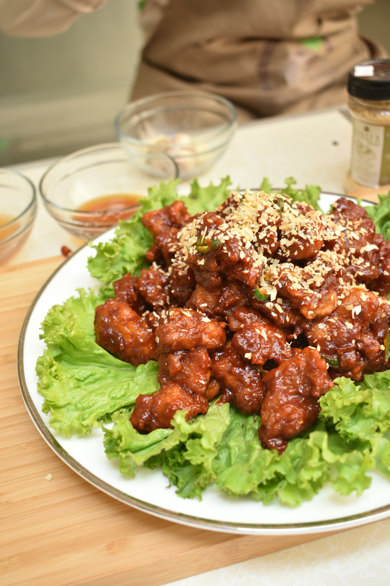

Korean Fried Chicken

Description
This Korean-flavored chicken recipe pairs twice-fried chicken bites with a sticky, sweet, and slightly hot
sauce made from garlic, ginger, soy sauce, and gochujang. Perfect for dinner, or serve as an appetizer or
snack. Garnish with chopped peanuts.
Ingredients
Chicken
- 3 chicken breasts, cut into bite-size pieces
- 2 tablespoons rice wine vinegar
- 1 teaspoon minced garlic
- 1 teaspoon minced ginger
- ¼ teaspoon salt
- 1 pinch ground black pepper
Sauce
- 6 tablespoons honey
- ¼ cup cider vinegar
- ¼ cup brown sugar
- 3 tablespoons gochujang (Korean chile paste)
- 2 tablespoons soy sauce
- 2 teaspoons minced garlic
- 1 teaspoon minced ginger
- 1 pinch ground black pepper
- 1 quart canola oil for frying, or as needed
- ½ cup cornstarch
Steps
- Make the chicken: Place chicken into a bowl. Add vinegar, garlic, ginger, salt, and pepper; toss until
well combined and chicken is coated. Let sit for 20 to 30 minutes.
- Meanwhile, make the sauce: Combine honey, vinegar, brown sugar, gochujang, soy sauce, garlic, ginger,
and black pepper in a pot over medium heat. Stir well and bring to a low boil. Reduce the heat to low
and simmer for 3 to 4 minutes. Remove from the heat.
- Fill a deep fryer with 1 inch oil and heat to 350 degrees F (175 degrees C).
- While the oil is heating, place cornstarch into a bowl. Add chicken and toss until evenly coated.
- Working in small batches without overcrowding, fry chicken until light golden brown, about 2 minutes per
side.
- Reheat oil to 350 degrees F (175 degrees C) and deep-fry chicken once more until deep golden brown,
about 40 seconds per batch. Transfer chicken to the pot of sauce.
- Heat sauce and chicken over medium-low heat until warmed through, about 3 minutes.
Home